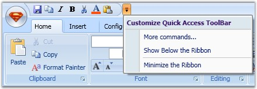
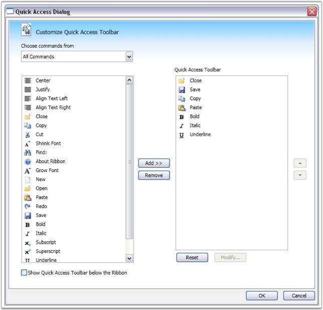

Quick Access Toolbar in the ribbon instance is used to group the most commonly used commands and access the commands easily without having to search for the command in the menu bar. QAT is easily customized using the built-in context menu and is placed above or below the ribbon.

Figure 860: Customizing the Quick Access Toolbar using the Built-In Context Menu
Common application commands like Save, Close, Print, and so on, are executed on the click of a button using the Command property of the ribbon button. Use the below code to add items to the Quick Access Toolbar.
|
[XAML]
<ribbon:Ribbon.QuickAccessToolBar> <ribbon:QuickAccessToolBar> <ribbon:RibbonButton ribbon:Ribbon.KeyTip="1" Command="ApplicationCommands.Close"/> <ribbon:RibbonButton ribbon:Ribbon.KeyTip="2" Command="ApplicationCommands.Save"> </ribbon:QuickAccessToolBar> </ribbon:Ribbon.QuickAccessToolBar> |
|
[C#]
RibbonButton rr = new RibbonButton(); rr.SmallIcon = new BitmapImage(new Uri("/../SampleImages/Bold16.png", UriKind.Relative)); rr.SizeForm = SizeForm.ExtraSmall; RibbonWindow.QuickAccessToolBar.Items.Add(rr); |
Adding items using Quick Access Dialog
Commands are added to Quick Access Toolbar using the Quick Access Dialog. Quick Access Dialog is enabled by selecting more commands option in the context menu of QAT. The Quick Access Dialog displays the list of all available commands in the application. You can insert commands in the Quick Access Toolbar by adding the commands to the right pane of the Quick Access Dialog.

Figure 861: Commands Added to the Quick Access Toolbar
See Also
 Menu Item
Synchronization
Menu Item
Synchronization